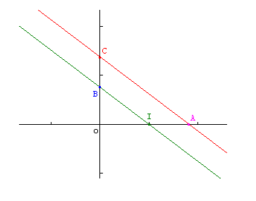
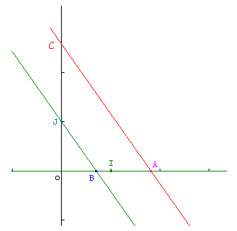
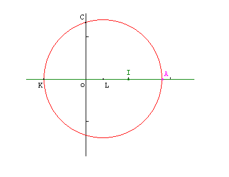
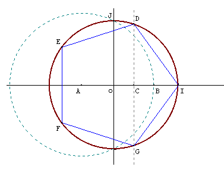

Constructions à la règle et au compas
Tout le monde (ou presque ...) sait, étant donné un angle, construire sa bissectrice en s'armant juste de sa règle (non graduée), et de son compas. Étant donné un segment de longueur $a,$ tout le monde sait construire avec ces 2 outils un segment de longueur $2a.$ Mais qu'est-il possible de faire avec une règle et un compas ? Peut-on par exemple couper un angle en 3, juste avec une règle et un compas ? Peut-on, si on a un segment de longueur $a$ et un segment de longueur $b,$ construire un segment de longueur $a×b,$ $a/b\ \dots\ ?$
Dans toute la suite, on considère deux points distincts $O$ et $I$ du plan. Soit $P$ un ensemble de points du plan. On considère les 2 catégories d'objets suivant :
- les droites $(AB)$, où $A$ et $B$ sont des éléments de $P$.
- les cercles centrés en un point de $P$, et de rayon $AB$, où $A$ et $B$ sont des éléments de $P$.
(ces 2 catégories d'objets sont donc tous les cercles et toutes les droites que l'on peut construire à partir des points de $P$).
Un point $M$ du plan est dit constructible à la règle et au compas en une étape à partir de $P$ s'il existe deux éléments distincts de 1. et 2. dont $M$ est point d'intersection
Un point $M$ est dit constructible à la règle et au compas à partir de $P$ s'il existe des points $M_1,\dots,M_n$ tels que $M_i$ soit constructible en une étape à partir de P et des points précédemment construits.
Lorsque l'ensemble des points que l'on se donne au départ est constitué de $O$ et de $I$, on dit simplement que $M$ est constructible (à la règle et au compas).
Enfin, on dit qu'un réel $r$ est constructible si le point $A$ tel que $\overrightarrow{OA}=r\overrightarrow{OI}$ est constructible.
- Les droites usuelles : bien sûr, on sait construire à la règle et au compas la médiatrice d'un segment, la parallèle à une droite passant par un point, la perpendiculaire à une droite passant par un point, etc ... Si on sait construire les réels $a$ et $b,$ il n'est pas non plus difficile de construire le réel $a-b$ !
- le produit de 2 réels constructibles : Si $a$ et $b$ sont deux réels constructibles,
alors on sait construire le produit $a×b$ :
 On considère le point $A (a,0),$ et $B(0,b).$ On trace la parallèle à $(BI)$ passant par $A,$ qui coupe l'axe des ordonnées en $C.$ D'après le théorème de Thalès, $OC/OB=OA/OI,$ ce qui donne $OC=ab.$ - le quotient de 2 réels constructibles : Si $a$ et $b$ sont deux réels constructibles, avec $b$ non nul,
alors on sait construire le quotient $a/b$ :
 On considère les points $A(a,0),$ $B(b,0)$ et $C(0,1).$ On trace la parallèle à $(BJ)$ passant par $A,$ qui coupe l'axe des ordonnées en $C.$ D'après le théorème de Thalès, $OC/OJ=OA/OB,$ d'où $OC=a/b.$ - la racine carrée d'un réel constructible : Si $a$ est un réel (positif) constructible, la racine carrée de $a$ est constructible.
Par exemple, il est possible de construire un segment de longueur $\sqrt 2$ :
 Soit $A$ de coordonnées $(a,0)$ et $K$ de coordonnées $(-1,0)$. On commence par déterminer, à la règle et au compas, $L$ le milieu de $[AK]$, qui a donc pour coordonnées $((a-1)/2,0)$. Puis on trace le cercle de centre $L$ passant par $A$ (et $K$). Il coupe l'axe des ordonnées en $C$. En appliquant le théorème de Pythagore au triangle $COL$, rectangle en $O$, on a : $$OC^2=CL^2-OL^2.$$ Puisque $CL=AL=(a+1)/2$ et $OL=(a-1)/2$, on obtient en développant $OC^2=a$ et donc $OC=\sqrt a$. - la construction du pentagone régulier (ou le partage d'une tarte en 5 parts égales) :
 $A$ est le point de coordonnées $(-1/2,0),$ $B$ est l'intersection du cercle de centre $A$ passant par $J.$ $C$ est le milieu de $[OB].$ Il est facile de prouver que $OC=(-0,5+\sqrt{5/4})/2$ et ceci est exactement $\cos(2\pi/5)$.
- la trisection d'un angle : à part pour des angles particuliers, il est en général impossible de couper un angle en 3 angles égaux, uniquement à la règle et au compas.
- la quadrature du cercle : il est impossible, étant donné un cercle, de construire un carré de même aire, uniquement à l'aide de la règle et du compas.
- la duplication du cube : si on a un patron de cube, il est impossible de construire un patron de cube dont le volume soit double du premier.
- la construction de l'heptagone régulier : il est impossible, à partir d'une règle et d'un compas, de partager une tarte en 7 parts égales.
Ces problèmes sont liés à la théorie des corps, et particulièrement à la notion de degré d'extension de corps. Signalons que Gauss a donné un théorème qui caractérise exactement les polygones réguliers contructibles à la règle et au compas :
Rappelons qu'un nombre premier $p$ est dit premier de Fermat s'il est de la forme $2^{2^q}+1$. On ne connait que 5 nombres premiers de Fermat : 3,5,17,257,65537. On ignore s'il en existe d'autres...
Enfin, on peut se contenter d'étudier les points qui sont constructibles au compas seul ... et, bizarrement, ce sont les mêmes que ceux qui sont constructibles à la règle et au compas ! C'est le théorème de Mohr-Mascheroni.